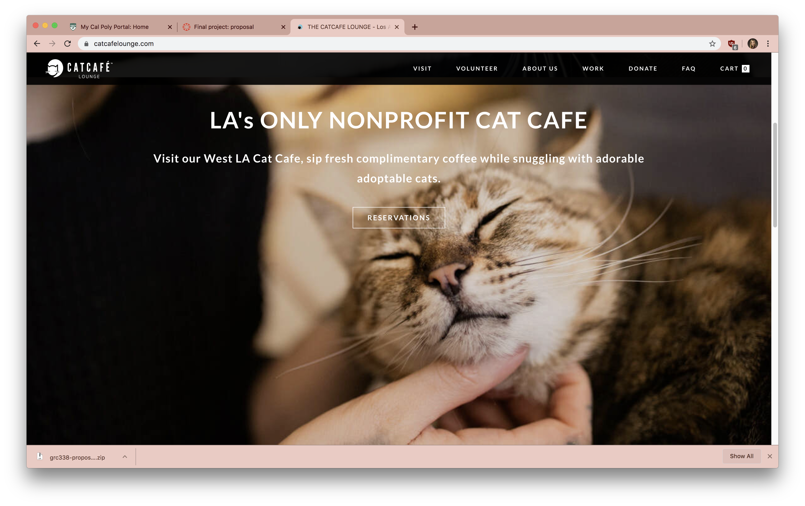

Final project proposal
Introduction
Chutsy's
Chutsy's is a malt/dessert shop that offers various milkshakes and desserts, but, like a cat café, there are shelter cats to pet here too. This business would offer guests a fun, relaxing experience while also helping to get homeless cats adopted.
Target audience
The target audience of this website will be potential customers of the location. They might be younger people, likely in their 20s, who want to relax and who generally enjoy cats.
Their primary goals with this website would be too find out more about the business, including the hours, address, etc. They will also be able to view some of the menu items, and see which cats will be there, and how to adopt.
Comparative analysis
Crumbs and Whiskers


CatCafe Lounge

Honeymee
Website content
Home
Welcome to Chutsy's!
Enjoy a milkshake while simultaneously helping to improve the lives of needy homeless cats.
[photo of the fictional location's interior with desserts]
Part of the profit made from our desserts goes towards buying food and other neccessities for the cats we hold. We also donate part of our profit to local cat shelters. Help make a difference!
[Photo of people holding cats]
We have helped to adopt 43 cats already. There are more awaiting a loving home. Come in today — Even if just to show our cats some love!
Information
432 Bumble Street, San Luis Obispo CA 93410
(805) 746-6378
Open Monday–Friday 10 AM–4 PM
Menu
Milkshakes
[Photo of Milkshakes]
-
Chutsy's Orange Special
This refreshing combination of rich vanilla ice cream and fresh orange juice is the perfect combination of sweet and tangy!
$5
-
Chessie's Favorite
Chunks of cookie dough are hand-spun together with silky smooth vanilla ice cream to create a flavorful take on the traditional milk and cookies.
$5
-
Salted Caramel
If you can’t decide between sweet and savory, this delicious milkshake satisfies both cravings with a delightful combination of rich caramel flavor, a hint of sea salt and creamy vanilla soft serve ice cream.
$5
-
Silky Strawberry
A blended fruity concoction of rich, creamy vanilla ice cream and freshly chopped strawberries.
$5
-
Double Vanilla
With double the vanilla and double the goodness, this classic is good enough to stand on its own.
$5
Desserts
[Photo of ice cream sundae]
-
The Sassy Siamese Sundae
A hot, chocolate-nut brownie smothered with vanilla soft serve and drenched with hot fudge, whipped cream, sliced almonds and a cherry on top!
$7
-
Fluffy Root Beer Float
Creamy, old-fashioned ice cream floats just like the care-free soda fountain days!
$4
-
Vanilla Soft Serve
Available in a cup or a cone.
$1.50
Our Cats
Our cats are waiting to meet you!
Enjoy dessert with a furry friend.
-
[Photo of cat "Bella"]
Beautiful Bella
Bella is a real sweetheart. She has been a guest at our location for a while now, and is looking for a new warm lap to sleep on. Even if you aren't looking to adopt, Bella would love to sit on your lap and receive some pets!
-
[Photo of cat "Pierre"]
Pierre l'Orange
Pierre is a real gentleman. He has a calm, comforting demeanor and would make a delightful addition to any household.
-
[Photo of cat "Jinxie"]
Sweet Jinxie
A shy girl, Jinxie is often ignored. But give her time and lots of attention, and you will find her inner sweetheart!
-
[Photo of cat "Luna"]
Little Luna
Luna is our newest guest at Chutsy's, a sweet little kitten. She is a ball of energy who would love to meet you!